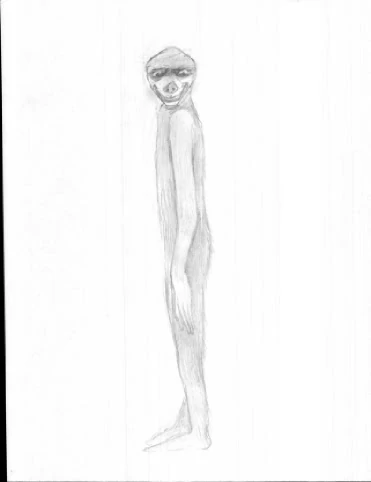

Mythical Creatures Around the World
7 American Mythical Creatures
Welcome to the American Mythology section! No, I did not use Big Foot for this webpage because I am confident there are other odd American creatures out there aside from that one. In fact, each state as their own assortments of myths, so there were hundreds I couldn't list sadly. To note, American folklore should not be confused with tribal beliefs of the United States' community native people, but it does contain some influence from Native American traditions. Along with Native American tradition influences, American folklore has evolved from stories from the time of Europeans arriving in the 16th century. Today, this mythology mainly consists of legends, oral history, popular beliefs, tall tales, proverbs, and even stories from jokes.
Hodag
The Hodag sourced from The Institute of Agriculture
The Hodag is said to resemble a large bull-like carnivore with horns and a thick, curved spine. It was said to be born from the ashes of a cremated oxen. Some say this is so because it is of the recombination of the abusive suffering animals had endured by their masters. Most claimed discoveries were in the city of Rhinelander, Wisconsin, but the most known story of its discovery/origin is one from Gene (or Eugene) Shepard who "discovered" the creature in 1893 after stumbling into a logging camp. He took a group of lumbermen to capture the beast using dynamite and returned with charred remains. However, Shepard was a prankster who was able to keep up the charade of the Hodag's existence by making snarling and snapping sounds to make it seem like he was fussing with the creature when he was out of sight from viewers. Soon he was part of the county fair circuit with his sons working behind the scenes to make it seem like the Hodag was moving. His scam was successful for years until a reporter came to investigate and eventually led Shepard to admit the truth. Along with the Hodag's origin story, the creature is also prominently figured in the early Paul Bunyan stories; Paul Bunyan is a giant lumberjack and a folk hero in American and Canadian folklore. The Hodag's ties to Rhinelander are so strong, it is the official symbol of Rhinelander, Wisconsin, named to many businesses and organizations such as the Hodag Country Festival (an annual music festival), and even the mascot of Rhinelander High School.
Fresno Nightcrawlers (also known as the Fresno Aliens)
©The Fresno Nightcrawlers by Banane-Surprise
These peculiar white and pants-like cryptids are said to be either aliens or spirits caught on video footage in Fresno, California as well as in a few other places such as Yosemite National Park in California. They are said to be short creatures with almost all its proportions being its legs while possessing a very small upper body and no arms; details of its upper body is hard to see from the footage. Its feet are very thin like stilts on top of muscular legs with knees that bend backwards as it walks. The sightings of these creatures dated back in 2010, and the last recent sightings was in 2017. I would say these things are aliens in my opinion.
Dover Demon
Dover Demon sourced from Brent Swancer
These alien-looking creatures were seen in Dover, Massachusetts in April 1977 by three teenagers. Not much is known about these creatures, but each teenager claimed to have saw one while driving at night, seeing a large-eyed creature with "tendril-like fingers" on top of a broken stone wall. The teenagers drew sketches of the creatures, giving us the only idea of what these creatures looked like. Skeptics, however, assumed it was simply a moose, a baby moose, or some calf, though others refute this explanation too since it was the wrong time of year for a small moose to be there; in addition, this area was far from the usual moose habitats. Therefore, the calf explanation seems more logical, though, in my opinion, this doesn't explain the "tendril-like fingers" detail.
Mothman
©Mothman by suviridian
This humanoid moth creature is the staple myth in West Virginia folklore from its sightings on Point Pleasant in November 1966 by a couple and after a bridge collapse in December 1967. Ironic to its name, those that described him said he was more like a humanoid owl instead of a moth... why name him the mothman then? He's said to be about 7 feet tall, with a large wingspan of 10-15 feet or more with huge red glowing eyes. His colorations vary from black to gray and even darker shades of brown. There are a lot of explanations about the nature of the mothman, including ones that said he may be an angel, a demon or something from a blood curse.
Wood Devils

Woods Devil sourced from Cryptid Wiki
These sasquatch-like creatures are said to roam the New Hampshire forests, specifically in Coos Country. They are said to be at least 7 feet tall and very thin while covered in gray fur. They're supposedly elusive creatures able to be fast and nimble to move from one tree to another. Sightings of them are said to go as far back as the 1900s, but the earliest recordings of it was during the spring of 2000 and another during November in 2004. During the 2004 sighting, it was said that when the man hunting with his grandfather heard a horrific squeal, they later came upon the monster, and thus assumed the creature made such a horrid squeal.
Urayuli (also known as the Hairy Man)
©Urayuli by DarkFirestorm123
Within the southwestern woodlands of Alaska are these shaggy haired creatures who have long, lanky arms and glowing eyes while towering at 10 feet tall; they are also known to emit a high pitch cry like that of a loon while residing in the forests near Lake Iliamna. They are said to be peaceful creatures unlike the Kushtaka of Southern Alaska (shape-shifting otters from Alaskan lore) and unlike the Hairy Men; the Hairy Men are sometimes assumed to be the same as the Urayuli but more aggressive. Supposedly, the Urayuli are transformed children who became lost in the woods.
Slide Rock Bolter
Slide-Rock Bolter sourced from Cryptid Wiki
These mountain fish are fearsome creatures that slide down the steep slopes of the Colorado mountains and gobble up everything in its path including people. Sightings of one by lumberjacks date back during the 19th and 20th century. It has a huge head and mouth yet small eyes. Its small tail possess large hooks used to hold onto the mountain's ridge so the creature remains still as it waits for days on end until it sees plenty of tourists in which it'll then unhook its tail, slide down, and gulp up its victims.
Sources:
32 Creatures From American Folklore - Parade.comCategory: American Legendary Creatures - En.wikipedia.org
Hodag - wisconsinlife.org
Fresno NightCrawlers - cryptidz.fandom.com
Dover Demon - cryptidz.fandom.com
Mothman - cryptidz.fandom.com
Wood Devils - obscurban-legend.fandom.com
Wood Devils - rabrewster.com
Urayuli - cryptidz.fandom.com
Slide Rock Bolter - cryptidz.fandom.com